Screen select widget
Screen select widgets are containers that store a collection of data "screens." Unlike the array screen widget, however, the screens can be entirely different from each other. They are useful for storing different kinds of data that will be accessed or entered in the same context-- for example, in preparing for an experiment.In the example shown below, the screen select widget allows the user to choose between screens for computers, microscope, bench and camera, and all of these relate to data about preparation procedures.
Example:
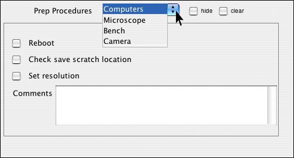
In the Create Form tab, click on the screen select widget icon in the toolbar.
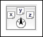
An empty screen select widget appears, with a default label.
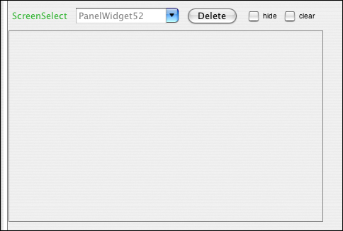
Double click on the green default label to change it to an appropriate name, and click "Accept."
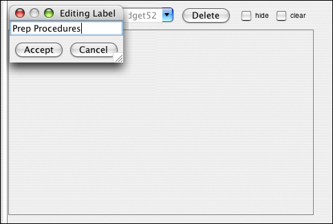
Now double click on the default screen label-- in this case, "PanelWidget52"-- to change it to the name of your first data screen.
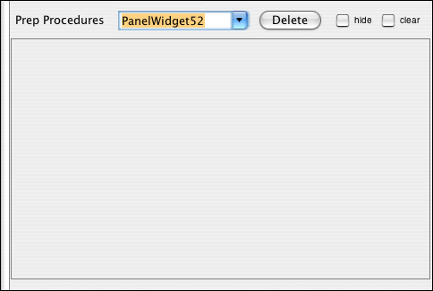
Your first data screen now has a name. Go ahead and add some other widgets by first clicking on their icon in the toolbar, and then dragging them inside the box outlining the data screen.
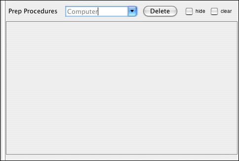
Here we have added three checkboxes and a multi line text field. Now we are ready to add a new data screen. To do this, click on the black arrow just to the right of the data screen name, and choose the option, "Add New Screen."
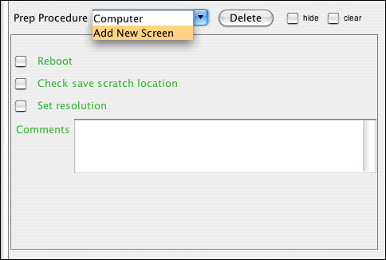
Enter a name for the new data screen.
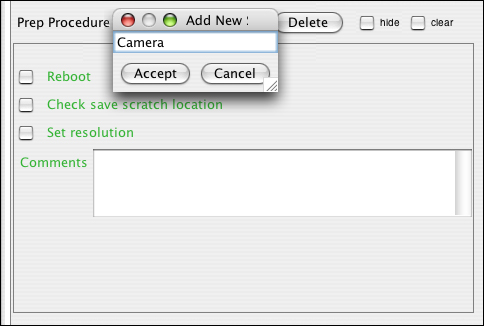
In this new screen, we added a banner, a checkbox, three pull-down menus, and a multi line text field.
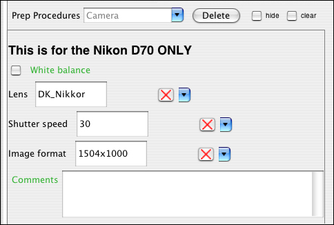
This is what the screen select widget will look like in Enter Data mode.
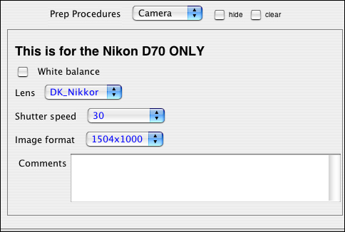
The user can switch between data screens by selecting them from the pull-down menu at the top.
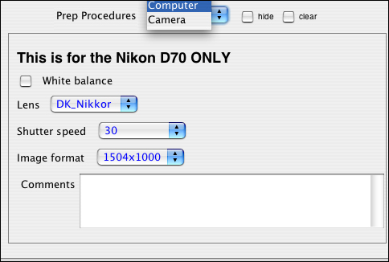
Now data has been stored in the "Camera" screen, and the user can enter data in the "Computer" screen.
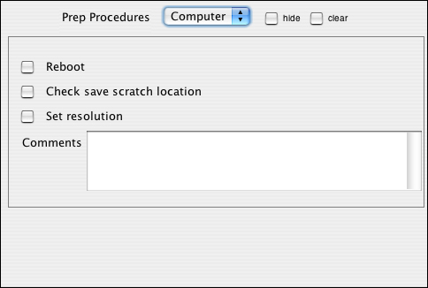
| Previous page | Return to top of page | Next page |